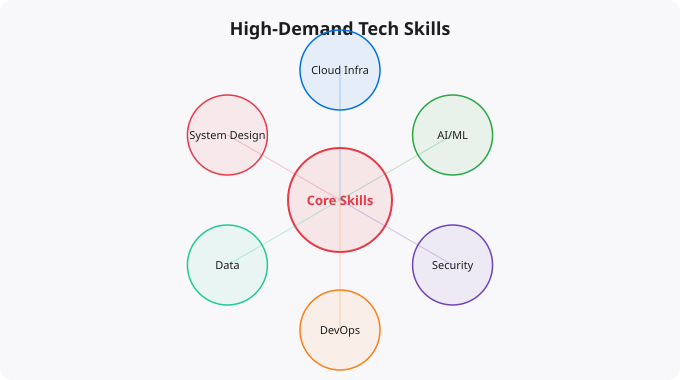

Top Tech Skills for the AI Era

The technology skills that mattered most five years ago are not the same ones that matter most today. AI has not made technical skills less important — it has changed which specific skills have the highest value and how those skills are applied. Understanding what to prioritize in your learning is one of the most important decisions you can make in your technical career right now.
Skill 1: Prompt Engineering and AI System Design
The ability to work effectively with large language models — knowing how to frame problems, write effective prompts, evaluate output quality, handle edge cases, and integrate AI capabilities into larger systems — is genuinely new and genuinely valuable. This is not about memorizing a few tricks. It is about developing judgment for when and how to use AI effectively, understanding its limitations, and building systems that combine AI capabilities with appropriate human oversight.
As AI models become embedded in more software products and workflows, the people who can architect systems that use AI well — where to apply it, how to handle its failures, how to evaluate its output — will be among the most valuable contributors in technology organizations.
Skill 2: Cloud Infrastructure and DevOps
Cloud infrastructure skills have been growing in importance for years, and AI has accelerated this trend rather than reversing it. AI workloads require cloud infrastructure. MLOps (Machine Learning Operations) is fundamentally DevOps applied to AI. Every company building AI products needs engineers who understand how to deploy, monitor, scale, and maintain cloud-based systems.
The core skills here: AWS, GCP, or Azure proficiency; Docker and Kubernetes for containerization and orchestration; infrastructure as code with Terraform or similar tools; CI/CD pipelines for automated testing and deployment; monitoring and observability tools. These skills are in high demand and that demand is increasing as more applications move to cloud-native architectures.
Skill 3: Data Engineering
AI systems are only as good as the data they are trained on and operated with. Data engineering — building reliable pipelines that collect, transform, store, and serve data — is a foundational discipline that supports everything else in the AI stack. Data engineers work with tools like Apache Kafka for real-time data streaming, Apache Spark or dbt for data transformation, Airflow or Prefect for pipeline orchestration, and cloud-native data services like AWS Redshift, Google BigQuery, or Snowflake for data warehousing.
The demand for people who can build reliable data infrastructure has grown rapidly and continues to grow as companies recognize that poor data quality is one of the primary reasons AI projects fail.
Skill 4: Python and Software Engineering Fundamentals
Python has consolidated its position as the primary language for data science, machine learning, and AI-adjacent work, and its importance for cloud automation and infrastructure tooling continues to grow as well. Importantly, knowing Python syntax is not enough — you need the software engineering foundations that make Python code maintainable, testable, and reliable. This means understanding object-oriented design principles, writing unit tests, structuring code into maintainable modules, using version control effectively, and following code review practices.
The AI era has not reduced the importance of software engineering fundamentals — it has amplified them, because AI-powered systems are more complex and their failures can be more consequential.
Skill 5: Cybersecurity and System Hardening
As systems become more complex and AI-powered, the attack surface for security threats grows. Security skills — understanding common vulnerabilities, implementing least-privilege access control, securing APIs, managing secrets and credentials properly, monitoring for anomalous behavior — are increasingly expected of everyone in technical roles, not just dedicated security professionals. The concept of DevSecOps — integrating security practices throughout the development lifecycle rather than treating it as a separate phase — reflects this shift. Every developer and engineer should understand the basics of application security, and those who develop deeper security expertise have strong career trajectories.
Skill 6: Systems Thinking and Architecture
The ability to think about systems as a whole — how components interact, where bottlenecks emerge, what the failure modes are, how to design for reliability and scalability — is a high-value skill that AI cannot easily replicate. Systems architecture requires the kind of contextual judgment, consideration of trade-offs, and understanding of real-world constraints that comes from experience and depth of knowledge.
As AI accelerates the production of individual code components, the ability to design the overall architecture — deciding how those components fit together, what the data flows look like, where state is managed, how the system degrades gracefully under failure — becomes more rather than less important.
The Horizontal Skills That Compound Everything
Communication: the ability to explain technical concepts clearly, write good documentation, and collaborate across disciplines multiplies the value of every technical skill. Learning ability: the technology landscape is changing fast enough that the ability to learn new tools and frameworks quickly matters more than current knowledge of any specific tool. Problem-solving under uncertainty: the ability to navigate ambiguous problems, form hypotheses, test them, and iterate is a fundamental skill that AI augments but cannot replace. These horizontal skills — often called soft skills but better described as foundational human capabilities — are what separate the most effective technical professionals from those who are merely technically competent.
Key takeaways
- The most valuable tech skills for 2026-2031: systems thinking, AI literacy, cloud + infra fluency, distributed systems intuition, and product judgement.
- Notice that "language X" isn't on the list. Languages are commodities now; the skill is what you do with them.
- Soft skills are the hardest skills: writing clearly, presenting confidently, negotiating outcomes, mentoring juniors. AI makes these more valuable, not less.
- Build a learning loop: read → build → write about it → repeat. People who do this consistently for 18 months end up unreasonably ahead.
Staying Current in a Fast-Moving Field
Artificial intelligence is evolving faster than almost any other technology domain. The specific tools, models, and capabilities that are current today will look different in a year. This makes staying current a genuine challenge — the half-life of specific technical knowledge is short. The strategies that work: follow the primary sources (research blogs from Anthropic, OpenAI, Google DeepMind, Hugging Face) rather than relying on summaries that may be outdated. Focus on underlying principles that transfer — model architecture concepts, evaluation methods, prompt engineering principles — rather than memorizing specific tool interfaces that will change. Build things with current tools to develop practical intuition, even knowing those specific tools will evolve. The professionals who navigate fast-moving fields best are those who can quickly assess new developments, extract the signal from the noise, and rapidly evaluate what is genuinely significant versus what is marketing.
Disclaimer:
This article is written for educational and informational purposes only.
It does not provide financial, legal, investment, or professional advice.
Cloud services, pricing, security, and practices may vary by provider,
region, and use case. Always verify information from official
documentation before making decisions.
The Skills That Compound Over a Career
Not all skills are equal. Some skills have diminishing returns -- once you know basic spreadsheets, learning more spreadsheet tricks does not dramatically increase your value. Others compound -- each additional skill layer makes you exponentially more capable. In the AI era, the highest-value skills are the ones that compound and that are difficult for AI to replicate.
Tier 1 - Foundation (Everyone in tech needs these)
Python: Data, automation, DevOps, ML -- universal
Linux/Terminal: Every server runs Linux
Git: Version control for everything
SQL: Data is everywhere, querying it is essential
Cloud basics: AWS or GCP -- infrastructure is in the cloud
Tier 2 - Specialise (Pick 2-3 based on career direction)
Kubernetes: Container orchestration -- high demand, rare skill
Terraform: Infrastructure as Code -- DevOps essential
Machine Learning: High ceiling, high demand, steep learning curve
Security: Growing field, premium salaries, AI creates new attack surfaces
Data Engineering: Pipelines, Spark, warehouses -- huge demand
Tier 3 - AI-Powered Productivity (Add to everything)
Prompt Engineering: Get 10x output from AI tools
AI Integration: Add AI capabilities to products
AI Ops: Deploy, monitor, and maintain ML models in productionHow to Build Skills Without Burning Out
The biggest mistake in skill building is trying to learn everything simultaneously. You start Python, get distracted by Kubernetes, try machine learning, read about Rust, and end up deep in a learning spiral that produces no actually usable skills. Deliberate skill sequencing works far better.
Pick one primary skill to develop deeply for 3 months. Put everything else on a "later" list. Depth in one skill is more valuable than surface knowledge in ten. After 3 months, evaluate: is this skill building toward where I want to go? If yes, go deeper. If the answer is different after real exposure, pivot to the next priority. This deliberate sequencing is how people build genuinely competitive skill stacks within 2-3 years rather than spending a decade learning and forgetting.
The Skill That Beats All Others: Learning to Learn
The technology landscape will change significantly over the next 10 years. Some languages and frameworks will become obsolete. New tools will emerge. The most durable competitive advantage is not mastery of any specific technology -- it is the ability to learn new technologies quickly. People who can go from zero to productive in a new tool in weeks rather than months will always be in demand, regardless of which specific tools the industry moves to next.
Learning to learn means: having a systematic approach to picking up new tools (docs first, tutorials second, build something third), knowing how to find the right resources quickly, maintaining a habit of daily learning even when not actively studying, and being comfortable with the discomfort of not understanding something yet.
More Questions Answered
What is the highest paying tech skill in India right now?
Machine Learning and AI engineering commands the highest premiums at senior levels. At mid-level, Kubernetes and Terraform expertise are in short supply relative to demand. AWS certified engineers with hands-on experience consistently earn above average. The combination of cloud + containers + IaC creates a profile with very high market value.
How many programming languages should I know?
Depth beats breadth. One language known deeply (Python or JavaScript) is more valuable than four languages known superficially. Add a second language only after you are genuinely productive in the first. Most jobs require depth in one primary language plus reading ability in one or two others.
Are certifications worth it in the AI era?
For cloud (AWS SAA, CKA) and security (CISSP, Security+), yes -- they signal validated knowledge to hiring managers. For programming languages, a strong GitHub portfolio beats any certificate. Certifications are most valuable at the beginning of a career to signal baseline competence. At senior levels, demonstrated results matter more.
Frequently Asked Questions
Is this topic relevant for Indian tech professionals?
Yes. India is one of the fastest-growing tech markets globally. These skills are in high demand across startups, MNCs, and product companies in Bangalore, Hyderabad, Pune, and Mumbai.
How do I stay updated on this topic?
Follow official documentation, tech blogs from practitioners, GitHub repositories, and communities like Dev.to, Hashnode, and Reddit. Avoid news that creates urgency without substance.
What resources does SRJahir Tech recommend?
Official documentation first. Then practical tutorials. Then build real projects. SRJahir Tech articles are written from real production experience — bookmark the series that matches your learning goal.
How long does it take to see results after learning?
Consistent daily practice for 3-6 months produces real, usable skills. The key is building projects, not just reading. Every article on SRJahir Tech includes practical examples you can implement today.
Is SRJahir Tech content free?
Yes. All articles on SRJahir Tech are completely free. No paywalls, no subscriptions. Quality technical education should be accessible to everyone, especially aspiring engineers in India.